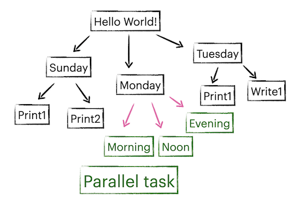

Hello World!#
In this section, you will create two files: config.toml and hello.py. The structure of the workflow is shown below.

Create config.toml#
Use nnmk as mentioned in introduction.
Enter 3 (personal computer) in system selection.
Enter hello when prompt module containing the main task.
Enter main when prompt function name of the main task.
Print “Hello World!”#
We have chose function main in hello.py as our main task. We can create the file and write a function:
# hello.py
def main(node):
print("Hello World!")
A task function by default accepts its Node as its only argument. In this case, the node passed to main is the top level root node. After creating the file, type rm -f root.pickle && nnrun, you will see the output (rm -f root.pickle clears the progress of the previous nnrun).
Add child tasks#
In a task function, you can add a child node with either a function or a shell command as its task.
Add a child node with a function
node.add(task_func)
def task_func(node):
print('Hello from func!')
Add a child node with a shell command
node.add('echo "Hello from echo!"')
Add child tasks with properties#
Properties are define in keyword arguments in Node.add().
node.add(print_today, day='Sunday') # Today is Sunday.
node.add(print_today, day='Monday') # Today is Monday.
node.add(print_today, day='Tuesday') # Today is Tuesday.
def print_today(node):
print(f'Today is {node.day}.')
Properties will be propagated to child nodes, unless overwritten.
node.add(print_sunday, day='Sunday')
def task_sunday(node):
node.add(print_today) # Today is Sunday.
node.add(print_today, day='the day before Monday') # Today is the day before Monday.
Parallel tasks#
You can execute all child tasks concurrently by setting the property concurrent. These tasks should either be async functions or background tasks (MPI or background process). The following example contains 3 tasks with execution time 1s, 2s and 3s. But the total execution time is 3s because these tasks are executed in parallel.
node.add(task_monday, day='Monday', concurrent=True)
def task_monday(node):
node.add(print_morning) # add an async function that lasts 1s
node.add_mpi('sleep 2 && echo "Good afternoon."', 1) # add a mpi task with 1 CPU that lasts 2s
node.add_mpi('sleep 3 && echo "Good evening."', use_multiprocessing=True) # add a background process that lasts 3s
async def print_morning(node):
from asyncio import sleep
await sleep(1)
print('Good morning')
Directory utilities#
Node offers file system utilities like cp, mv, read, write. By default, child tasks use the same directory as its parent, but can be changed by passing a cwd parameter.
node.add(task_tuesday, day='Tuesday', cwd='tue')
def task_tuesday(node):
node.add(print_today)
node.write(node.day, 'today.txt') # writes today.txt in ./tue
node.add('echo "noon" > time.txt', cwd='noon') # writes time.txt in ./tue/noon